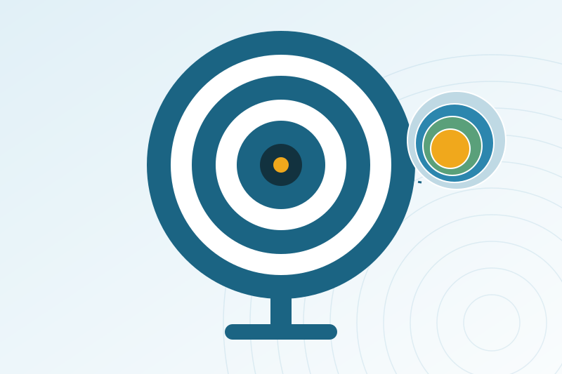

Technologie
Genau messen, bevor wir anpassen: So sehen wir, welche Linse oder Brille wirklich zu Ihren Augen passt.
Hornhauttopographie
Ein Gerät projiziert Ringe auf die Hornhaut und berechnet daraus eine farbige Karte ihrer Form. Auf der Karte sieht man Wölbung und Unregelmäßigkeiten, etwa bei Keratokonus. Daran richten wir die Linse aus.
Vermessung von Auge und Tränenfilm
Wir messen Hornhautdurchmesser, Lidspalte und die Qualität des Tränenfilms. Diese Werte entscheiden, welches Material und welche Größe in Frage kommen.
Nachbearbeitung im eigenen Haus
Formstabile Linsen passen wir vor Ort nach. So lassen sich Sitz und Komfort in kurzer Zeit verbessern.
Beispieltext. Das echte Studio ersetzt ihn durch eigene Inhalte und Fotos.
